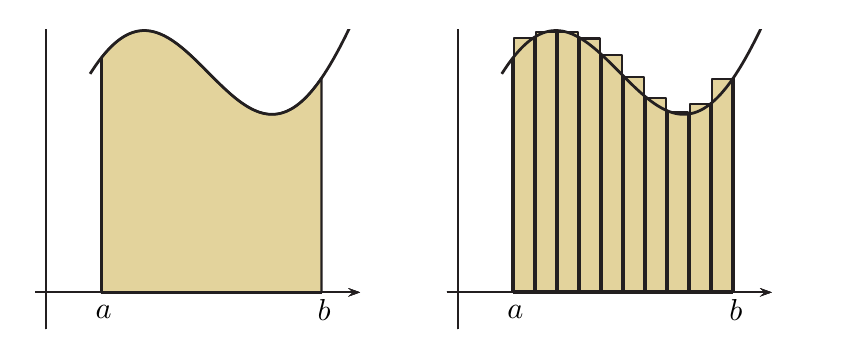
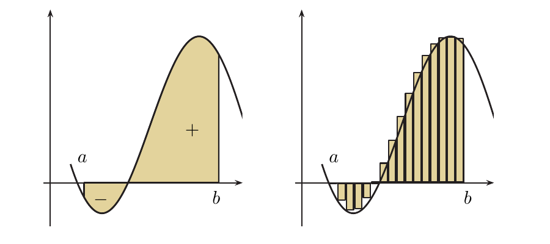
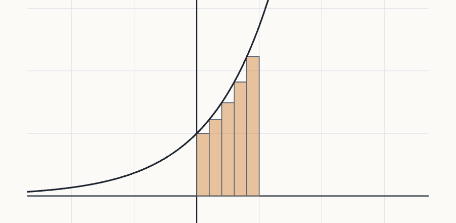

Definición de integral de Riemann
Qué es de verdad una integral definida: el área (con signo) bajo una gráfica, obtenida como límite de sumas de rectángulos cada vez más finos. Verás cómo se calcula «a pelo» con la definición, qué propiedades cumple, y qué es una primitiva (integral indefinida).
0Antes de empezar U p.236
Para medir el área de una parcela de forma rara se la trocea en tiras estrechas que casi son rectángulos, se suman las áreas de las tiras y se hacen las tiras cada vez más estrechas: el valor al que se acerca la suma es el área. Eso es la integral definida $\int_a^b f(x)\,dx$. Si la gráfica pasa por debajo del eje, esa parte resta. Este método es el de «exhaución» de Eudoxo y es el principio de toda la integración (U p.236).
U pp.236-238Qué necesitas saber ya
- Límite de una sucesión (tema 1.2): $\lim_{n\to\infty}\frac{5n+3}{2n}=\frac52$. Cada suma de Riemann con $n$ rectángulos es un término de una sucesión y la integral es su límite.
- Sumatorios: $\sum_{i=1}^n1=n$, $\sum_{i=1}^n i=\frac{n(n+1)}2$ (el truco de Gauss: emparejar el primero con el último) y $\sum_{i=1}^n i^2=\frac{n(n+1)(2n+1)}6$ (se demuestra en el Propio 1).
- Continuidad y sus teoremas (tema 1.4): una función continua en $[a,b]$ alcanza máximo y mínimo (Weierstrass, U Prop. 1.15, pp.52-53) y toma todos los valores intermedios (U p.52).
- Derivada y regla de L'Hôpital (tema 2.3): solo para un límite del primer ejemplo.
- Funciones con la misma derivada (tema 2.5): dos funciones con la misma derivada en un intervalo se diferencian en una constante (se usa en la integral indefinida, apartado 5).
Mapa del tema
| Apartado | Qué contiene | Dónde está |
|---|---|---|
| 1 Área con rectángulos | idea; Ej. 6.1 de U ($e^x$ en $[0,1]$); área con signo | U pp.236-238 |
| 2 Partición, finura, suma de Riemann | vocabulario para escribir la definición | U pp.238-239 |
| 3 Definición de integral definida | Def. 6.1; Ej. 6.2; interactivo; receta general | U p.239 |
| 4 Propiedades | siete reglas; Ej. 6.3 (áreas con signo) | U p.240 |
| 5 Integral indefinida | primitiva, Def. 6.2; Ej. 6.4 | U pp.241-242 |
| 6 Ejercicios de E | 6.1-6.10 (10 ejercicios) | E pp.214-218 |
| 7 Ejemplos propios | 4 ejemplos, de menos a más difícil | propio |
| 8 Examen | 4 problemas de X | X |
| 9 Chuleta y comprobación | fórmulas, errores, lista | síntesis |
Qué se pide en los ejercicios y en el examen
(A) Vocabulario: calcular o construir particiones y su finura (E 6.1-6.3). (B) Propiedades: decidir cuáles son siempre ciertas y cuáles no (E 6.4-6.6, 6.10), usar aditividad (E 6.8) y acotar con la monotonía (E 6.7). (C) Calcular una integral con la definición (sumas de Riemann y límite) o con áreas con signo (U Ej. 6.2 y 6.3; los ejemplos propios). En los exámenes de X la definición en sí no aparece: lo que cae son preguntas de verdadero o falso sobre la integral $F(x)=\int_0^x f$ (monotonía, extremos) y áreas entre curvas; se resuelven con las propiedades de este tema y se completan con el teorema fundamental de §6.2 (los problemas del apartado 8 lo indican). Las técnicas de cálculo (primitivas, partes, sustitución) vienen en §6.3, la regla del trapecio y Simpson en §6.4 y las integrales impropias en §6.5.
1El área bajo una gráfica con rectángulos U pp.236-238
Una parcela rectangular de $a$ por $b$ metros tiene área $a\cdot b$; esa fórmula no falla. Pero ¿y una parcela con un lado curvo? Se coloca un embaldosado de rectángulos que llegue hasta la curva. Con pocas baldosas grandes queda mucho hueco o se sale por fuera; con muchas baldosas estrechas el error se hace diminuto. El área exacta es el valor al que se acerca la suma de las áreas de las baldosas cuando su anchura tiende a $0$.
Concretamente (U p.236): $f:[a,b]\to\mathbb R$ continua con $f(x)\ge0$; se quiere el área entre su gráfica, el eje $x$ y las rectas $x=a$, $x=b$.
U p.236
- Dividir en $n$ trozos iguales: $\left[0,\tfrac1n\right],\left[\tfrac1n,\tfrac2n\right],\dots,\left[\tfrac{n-1}n,1\right]$. La base de cada rectángulo es $\frac1n$.
- Altura del rectángulo $i$: la de la función en su extremo izquierdo, $f\!\left(\frac{i-1}n\right)=e^{(i-1)/n}$.
- Área del rectángulo $i$: base por altura, $\frac1n\,e^{(i-1)/n}$.
- Sumar: $S_n=\frac1n\left(e^0+e^{1/n}+e^{2/n}+\dots+e^{(n-1)/n}\right)=\frac1n\sum_{i=1}^ne^{(i-1)/n}$.
- Reconocer una suma geométrica: $n$ sumandos, primer término $1$ y razón $r=e^{1/n}$ (cada término es el anterior por $e^{1/n}$). Se usa $\sum_{k=0}^{n-1}r^k=\frac{1-r^n}{1-r}$, y como $r^n=e$, vale $\frac{1-r^n}{1-r}=\frac{1-e}{1-e^{1/n}}=\frac{e-1}{e^{1/n}-1}$, así que $$S_n=\frac1n\cdot\frac{e-1}{e^{1/n}-1}.$$
- Límite: $A=\lim_{n\to\infty}S_n=(e-1)\lim_{n\to\infty}\dfrac{1/n}{e^{1/n}-1}$. Para aplicar L'Hôpital hay que pasar de la variable $n$ a una real $t=\frac1n$ (si $n\to\infty$, $t\to0^+$), con lo que el cociente es $\frac t{e^t-1}$, una indeterminación $\frac00$. Por la regla de L'Hôpital (U §2.3, p.82), $\lim_{t\to0^+}\frac t{e^t-1}=\lim_{t\to0^+}\frac1{e^t}=1$. Por tanto $$A=e-1\approx1{,}7183.$$
| $n$ | $1$ | $2$ | $5$ | $10$ | $100$ |
|---|---|---|---|---|---|
| $S_n$ | $1$ | $1{,}3244$ | $1{,}5522$ | $1{,}6338$ | $1{,}7097$ |
Si la gráfica baja del eje $x$, la altura $f(c_i)$ es negativa y el «rectángulo» tiene área negativa. Se acepta así: $f\ge0$ suma, $f\lt0$ resta (U p.238). El resultado ya no es «el área» en sentido geométrico, sino un área con signo (la de arriba menos la de abajo). Es como una cuenta bancaria: lo que está sobre el eje son ingresos y lo que está bajo el eje, gastos; la integral es el saldo.
U p.238
2Partición, finura y suma de Riemann U pp.238-239
Para poder escribir la definición con precisión hacen falta tres palabras. En el ejemplo anterior todos los trozos medían lo mismo y se usó siempre el extremo izquierdo, pero se puede ser más libre: trozos de anchuras distintas y, en cada trozo, cualquier punto para medir la altura. Si $f$ es continua, la elección concreta deja de importar cuando los trozos son muy estrechos: dos alturas elegidas en un trozo diminuto son casi iguales (U nota 1, p.238: aquí la continuidad es fundamental).
PUna partición $P$ de $[a,b]$ en $n$ subintervalos es una lista de $n+1$ puntos $a=x_0\lt x_1\lt x_2\lt\dots\lt x_n=b$. La longitud del subintervalo $i$-ésimo es $\Delta x_i=x_i-x_{i-1}$ y la finura de $P$, $\|P\|$, es la mayor de esas longitudes: $\|P\|=\max_i\Delta x_i$.
Se elige un punto $c_i$ cualquiera en cada $[x_{i-1},x_i]$; la altura del rectángulo $i$ es $f(c_i)$. La suma de Riemann es la suma de las áreas de los rectángulos: $$S=f(c_1)\Delta x_1+f(c_2)\Delta x_2+\dots+f(c_n)\Delta x_n=\sum_{i=1}^nf(c_i)\,\Delta x_i.$$ Está asociada a la partición $P$ y a los representantes $c_i$.
U pp.238-239(i) Confundir la finura con el número de puntos, con el de subintervalos o con la longitud media: es la longitud del subintervalo más largo (E 6.1). (ii) Creer que «$\|P\|\to0$» es lo mismo que «$n\to\infty$» en cualquier partición. Si $\|P\|\to0$ entonces $n\to\infty$ (hacen falta cada vez más trozos), pero no al revés: se pueden añadir muchos puntos en un trozo y dejar otro grande. Con particiones equiespaciadas sí coinciden, porque $\|P\|=\frac{b-a}n$ (L §4.3, p.267). (iii) Olvidar la base $\Delta x_i$ y sumar solo alturas.
L p.267 P3La integral definida (Definición 6.1) U p.239
Para una función continua $f:[a,b]\to\mathbb R$, la integral definida es $$\int_a^bf(x)\,dx=\lim_{\|P\|\to0}\sum_{i=1}^nf(c_i)\,\Delta x_i.$$ Para funciones continuas este límite existe y no depende ni de las particiones ni de los $c_i$ elegidos (U p.239). Aquí $\lim_{\|P\|\to0}$ no es un límite de sucesión: significa que la suma se acerca al número $I$ tanto como se quiera con tal de que la finura sea suficientemente pequeña, sea cual sea la partición y los $c_i$; con particiones equiespaciadas basta hacer $n\to\infty$. Los números $a$ y $b$ son los límites de integración; $f$ es el integrando y $x$ la variable de integración. También se escribe $\int_a^bf$ (U p.240).
U pp.239-241Aquí la integral se define para funciones continuas, y toda función continua en $[a,b]$ es integrable. La idea de «integrable» (el límite de las sumas existe y es el mismo para todas las elecciones) tiene sentido para más funciones: por ejemplo, el escalón $f(x)=0$ en $[0,1)$ y $f(x)=1$ en $[1,2]$ no es continuo en $1$, pero es integrable y $\int_0^2f=1$ (es el rectángulo de base $1$ y altura $1$; la parte de altura $0$ no aporta).
U pp.239-240 L p.268 S p.372«Integrable $\Rightarrow$ continua» es falso (el escalón de arriba); lo cierto es «continua $\Rightarrow$ integrable».
PEn cada trozo, la función continua alcanza un mínimo $m_i$ y un máximo $M_i$ (Weierstrass). La suma inferior $s(P)=\sum m_i\Delta x_i$ usa rectángulos que quedan dentro de la región; la suma superior $S(P)=\sum M_i\Delta x_i$ usa rectángulos que la cubren. Cualquier suma de Riemann con esa partición queda entre las dos, y el área exacta también. Cuando los trozos se estrechan, las dos sumas se acercan al mismo número (L Teor. 4.3, p.260), y todo lo que queda entre ellas, también: ese es el valor de la integral, sea cual sea la elección.
L pp.258, 260- Partición equiespaciada en $n$ trozos: $\Delta x_i=\frac{2-(-1)}n=\frac3n$ y $x_i=-1+\frac{3i}n$ (así $x_0=-1$, $x_n=2$).
- Puntos $c_i$: el extremo derecho, $c_i=x_i$.
- Alturas: $f(c_i)=2x_i=-2+\frac{6i}n$.
- Suma: $S_n=\sum_{i=1}^n\left(-2+\frac{6i}n\right)\frac3n=-6+\frac{18}{n^2}\sum_{i=1}^ni=-6+\frac{18}{n^2}\cdot\frac{n(n+1)}2=-6+\frac{9(n+1)}n=3+\frac9n.$ (Se saca fuera del sumatorio lo que no depende de $i$.)
- Límite: la finura es $\frac3n\to0$ cuando $n\to\infty$, así que $\displaystyle\int_{-1}^22x\,dx=\lim_{n\to\infty}\left(3+\frac9n\right)=3.$
- Comprobación geométrica: triángulo de abajo $-1$ y triángulo de arriba $+4$ (figura del apartado 4): $-1+4=3$.
- Partición equiespaciada: $\Delta x=\frac{b-a}n$ y $x_i=a+i\,\frac{b-a}n$. Su finura $\frac{b-a}n\to0$ equivale a $n\to\infty$.
- Elegir $c_i$ cómodo (casi siempre $c_i=x_i$). Como $f$ es continua, no cambia el resultado.
- Escribir $S_n=\sum_{i=1}^nf(c_i)\,\Delta x$, sacar del sumatorio lo que no dependa de $i$ y usar $\sum1=n$, $\sum i=\frac{n(n+1)}2$, $\sum i^2=\frac{n(n+1)(2n+1)}6$.
- Calcular $\lim_{n\to\infty}S_n$.
Funciona bien con rectas y con $x^2$; con funciones más complicadas (como $\operatorname{sen}x$ o $\ln x$) es muy laborioso, y por eso en §6.2 se estudia un procedimiento más directo (U p.241).
P
En Maxima, la integral definida de $f$ entre $a$ y $b$ se calcula con integrate(f(x),x,a,b) (U p.239).
4Propiedades de la integral definida U p.240
Si se piensa en áreas con signo, todas las propiedades son casi obvias: duplicar una función duplica el área; el área de una suma es la suma de las áreas; si una función está siempre por encima de otra, su área es mayor; el área total es la de la parte izquierda más la de la derecha; y recorrer el intervalo al revés cambia el signo. Lo que no hay son reglas para productos, cocientes ni composiciones: ahí hay que tener cuidado (E 6.5, 6.6).
PSean $f,g$ continuas en $[a,b]$ y $k$ una constante. Entonces:
| Nombre | Enunciado |
|---|---|
| (P0) Intervalo vacío | $\displaystyle\int_a^af=0$ para toda $f$ |
| (P1) Constante | $\displaystyle\int_a^bkf=k\int_a^bf$ |
| (P2) Suma | $\displaystyle\int_a^b(f+g)=\int_a^bf+\int_a^bg$ |
| (P3) Monotonía | si $f(x)\le g(x)$ en $[a,b]$, entonces $\displaystyle\int_a^bf\le\int_a^bg$ |
| (P4) Valor absoluto | $\displaystyle\left|\int_a^bf\right|\le\int_a^b|f|$ |
| (P5) Aditividad | si $c\in[a,b]$, entonces $\displaystyle\int_a^bf=\int_a^cf+\int_c^bf$ |
| (P6) Cambio de orden | $\displaystyle\int_a^bf=-\int_b^af$ |
«Las propiedades son fáciles de deducir a partir de la definición» (U p.240): todas salen de las propiedades de las sumas y de los límites.
U p.240Si $k$ es constante, $\displaystyle\int_a^bk\,dx=k(b-a)$. Por qué: toda suma de Riemann de la función constante es $\sum k\,\Delta x_i=k\sum\Delta x_i=k(b-a)$ (los trozos suman la longitud total), así que el límite es ese mismo número. Es el área de un rectángulo de base $b-a$ y altura $k$ (con signo menos si $k\lt0$). Con (P3) da la acotación más usada: $$m\le f(x)\le M\ \text{en }[a,b]\ \Longrightarrow\ m(b-a)\le\int_a^bf\le M(b-a).$$
P- Sacar la constante (P1): $\int_{-1}^22x\,dx=2\int_{-1}^2x\,dx$.
- Partir donde cambia el signo (P5): $x\lt0$ en $[-1,0]$ y $x\gt0$ en $[0,2]$, así que $2\int_{-1}^2x\,dx=2\int_{-1}^0x\,dx+2\int_0^2x\,dx$.
- Leer áreas: para $y=x$ en $[-1,0]$ hay un triángulo bajo el eje de base $1$ y altura $1$, con área $\frac12$, que se resta: $\int_{-1}^0x\,dx=-\frac12$. En $[0,2]$ hay un triángulo sobre el eje de base $2$ y altura $2$: $\int_0^2x\,dx=2$.
- Resultado: $2\left(-\frac12\right)+2\cdot2=3$, el mismo valor que con la definición (Ej. 6.2).
(i) Integral no es área geométrica: con una función que cambia de signo, la integral resta; para el área geométrica hay que integrar $|f|$ o sumar los trozos en valor absoluto (en el ejemplo, $1+4=5$ frente a $3$). (ii) No hay $\int fg=\int f\cdot\int g$ ni $\int|f+g|=\int|f|+\int|g|$ (solo $\le$). (iii) Al cambiar el orden de los límites se cambia el signo: $\int_2^{-1}2x\,dx=-3$. (iv) La integral definida es un número, no una función.
PDe la acotación de arriba sale un resultado que se usará en §6.2: si $f$ es continua en $[a,b]$, existe $c\in[a,b]$ con $\int_a^bf=f(c)(b-a)$ (el área bajo $f$ es igual a la de un rectángulo de la misma base y altura $f(c)$). Es la demostración de E 6.9 (U p.244); se resuelve más abajo con lo visto aquí.
U p.244 E p.2185Integral indefinida: primitivas U pp.241-242
Calcular integrales definidas con sumas es laborioso y a veces imposible (U p.241). Hay un camino más directo que se basa en una pregunta que ya conoces: en el tema 2 se pasaba de una función a su derivada; ahora se pregunta cuándo y cómo se puede ir hacia atrás. Una función cuya derivada es $f$ se llama primitiva de $f$. Si $F$ es una primitiva, $F+3$ también lo es (la constante desaparece al derivar), así que hay infinitas primitivas, todas iguales salvo una constante. Es como saber la velocidad en cada instante pero no desde dónde salió el coche: la posición queda determinada salvo una constante.
U p.241Si $f:(a,b)\to\mathbb R$ es continua, cualquier $F$ que verifique $F'(x)=f(x)$ para todo $x\in(a,b)$ es una primitiva de $f$. Se denota $F(x)=\int f(x)\,dx$. La integral indefinida de $f$ es el conjunto de todas las primitivas de $f$. En la expresión, $f(x)$ es el integrando, $x$ la variable de integración y $dx$ indica respecto a qué variable se integra. Con $F$ se denota también una primitiva de $f$ (U p.241).
La diferencia formal con la integral definida: ésta lleva límites de integración, números que indican el intervalo (U p.241). Una integral definida es un número; una indefinida es una familia de funciones (L p.268).
U p.241 L p.268- Una primitiva: si $F(x)=x^2-x$, entonces $F'(x)=2x-1$. Luego $x^2-x$ es una primitiva de $2x-1$.
- Otras: $x^2-x+1$ y $x^2-x+3$ también lo son (su derivada sigue siendo $2x-1$). En general $\int(2x-1)\,dx=x^2-x+k$, con $k$ cualquier número real. Se comprueba derivando el resultado.
- Por qué no hay más: en el tema 2 se vio que dos funciones con la misma derivada en un intervalo se diferencian en una constante. Por eso, si $F$ y $G$ son primitivas de $f$, existe $k$ con $F(x)-G(x)=k$; al escribir la integral indefinida se elige una primitiva y se le añade $+k$.
Maxima calcula una integral indefinida con integrate(f(x),x); y toma por defecto la constante arbitraria $k=0$ (U pp.241-242).
La integral definida (un número, definido con límites de sumas) y la indefinida (una función, definida con derivadas) parecen cosas distintas. El teorema fundamental del cálculo (§6.2) las une: para calcular $\int_a^bf$ basta con una primitiva $F$ y restar $F(b)-F(a)$. Aquí solo se necesita saber qué es una primitiva y comprobarla derivando.
P6Ejercicios del libro, resueltos E pp.214-218
Orden recomendado para aprender: vocabulario (6.1, 6.3, 6.2) → función nula y primitiva (6.4, 6.10) → verdadero o falso de propiedades (6.5, 6.6) → aditividad y acotaciones (6.8, 6.7) → demostración del valor medio integral (6.9). El ejercicio 6.11 usa el teorema fundamental y se verá en el tema 6.2.
Índice rápido: 6.1 · 6.2 · 6.3 · 6.4 · 6.5 · 6.6 · 6.7 · 6.8 · 6.9 · 6.10.
A · Particiones y finura
Ejercicio 6.1 · finura de $P=\{1,2,3,5,6\}$ E p.214
Calcula la finura $\|P\|$ de la partición $P=\{1,2,3,5,6\}$ del intervalo $[1,6]$.
- Qué me piden
- Un número: la longitud del subintervalo más largo.
- Cómo lo pienso
- La finura mide «lo grueso que es el troceado»: el trozo peor es el más largo.
- Qué uso
- Definición de finura (U p.238): $\|P\|=\max\Delta x_i$.
- Por dónde empiezo
- Escribir los subintervalos y restar los extremos de cada uno.
- Comprobar que es partición de $[1,6]$: $1\lt2\lt3\lt5\lt6$, el primer punto es $a=1$ y el último $b=6$. Hay $n=4$ subintervalos.
- Subintervalos: $[1,2]$, $[2,3]$, $[3,5]$, $[5,6]$.
- Longitudes $\Delta x_i=x_i-x_{i-1}$: $1,\ 1,\ 2,\ 1$.
- Finura: $\|P\|=\max\{1,1,2,1\}=\boxed{2}$.
Confundir la finura con el número de puntos ($5$), con el de subintervalos ($4$) o con la longitud media ($\frac54$).
Ejercicio 6.3 · ¿puede valer $7$ la finura de una partición de $[-\pi,\pi]$? E p.214
¿Puede ser la finura $\|P\|$ de una partición del intervalo $[-\pi,\pi]$ igual a $7$?
- Qué me piden
- Sí o no, con justificación.
- Cómo lo pienso
- Un trozo de un intervalo no puede ser más largo que el intervalo entero. Basta comparar $7$ con la longitud de $[-\pi,\pi]$.
- Qué uso
- Definición de finura (U p.238).
- Por dónde empiezo
- Acotar $\Delta x_i$.
- Cada subintervalo está dentro de $[-\pi,\pi]$: $x_i\le\pi$ y $x_{i-1}\ge-\pi$.
- Su longitud está acotada: $\Delta x_i=x_i-x_{i-1}\le\pi-(-\pi)=2\pi$.
- Finura: como es el máximo de esas longitudes, $\|P\|\le2\pi\approx6{,}2832$.
- Comparar: $7\gt2\pi$. No es posible.
- Qué valores sí: todo número de $(0,2\pi]$; el valor $2\pi$ lo da la partición $P=\{-\pi,\pi\}$ con un único subintervalo.
Pensar que añadiendo puntos la finura puede crecer: añadir puntos solo puede dejarla igual o hacerla menor.
Ejercicio 6.2 · partición de $[0,4]$ con cien elementos y finura $3$ E p.214
Define una partición de $[0,4]$ con cien elementos distintos y finura igual a $3$.
- Qué me piden
- Construir una partición concreta que cumpla dos condiciones: $100$ puntos y que el trozo mayor mida exactamente $3$.
- Cómo lo pienso
- Un salto de longitud $3$ fija la finura; los puntos restantes se meten en el trozo que queda, con saltos más pequeños que $3$.
- Qué uso
- Definición de partición y de finura (U p.238).
- Por dónde empiezo
- Poner $x_0=0$, $x_1=3$ y repartir los demás puntos entre $3$ y $4$.
- Un trozo de longitud $3$: $x_0=0$ y $x_1=3$.
- Cuántos puntos faltan: ya hay $2$; faltan $98$ puntos distintos en $(3,4]$, y el último debe ser $4$.
- Repartirlos con saltos pequeños: $x_{k+1}=3+\frac k{98}$ para $k=1,\dots,98$. Así $x_2=3+\frac1{98}$, …, $x_{99}=4$. $$P=\Big\{0,\ 3,\ 3+\tfrac1{98},\ 3+\tfrac2{98},\ \dots,\ 4\Big\}.$$
- Contar y comprobar: $2+98=100$ puntos distintos, ordenados, del $0$ al $4$. El primer trozo mide $3$ y los demás $\frac1{98}\lt3$, luego $\|P\|=3$.
- Otra respuesta válida (el trozo grande al final): $y_i=\frac i{98}$ para $i=0,\dots,98$ y el punto $4$. Son $99+1=100$ puntos; el último subintervalo $[1,4]$ mide $3$ y es el mayor. Hay infinitas soluciones.
«Cien elementos» son $100$ puntos, es decir, $99$ subintervalos; contar mal desplaza todo en uno.
B · Función nula y primitiva
Ejercicio 6.4 · la integral de la función nula es $0$ E pp.214-215
Muestra que la integral definida de la función nula es cero en cualquier intervalo: (i) utilizando la definición de integral; (ii) utilizando las propiedades de la integral (pista: solamente $0$ verifica $0+0=0$).
- Qué me piden
- Justificar que $\int_a^b0\,dx=0$ de dos maneras distintas.
- Cómo lo pienso
- (i) Todos los rectángulos tienen altura $0$, luego toda suma vale $0$. (ii) Llamando $I$ a la integral, las propiedades dan $I=I+I$, y solo el $0$ cumple eso.
- Qué uso
- Def. 6.1 (U p.239) y propiedad de la suma (P2, U p.240).
- Por dónde empiezo
- Escribir una suma de Riemann cualquiera de la función nula.
(i) Con la definición.
- Hipótesis: $f(x)=0$ es continua en $[a,b]$, así que la integral existe y es el límite de las sumas de Riemann.
- Cualquier suma de Riemann: para cualquier partición y cualesquiera $c_i$, $f(c_i)=0$, luego $\sum f(c_i)\Delta x_i=\sum0\cdot\Delta x_i=0$.
- Límite: todas las sumas valen $0$, así que su límite cuando $\|P\|\to0$ es $0$: $\int_a^b0\,dx=0$.
- Si $a=b$ se tiene (P0) y si $a\gt b$, (P6): $\int_a^b0=-\int_b^a0=0$.
(ii) Con las propiedades.
- Llamar $I=\int_a^b0\,dx$ (un número real). Hay que ver que $I=0$.
- Escribir la función nula como suma: $0=0+0$, luego $I=\int_a^b(0+0)\,dx$.
- Propiedad de la suma (P2): $\int_a^b(0+0)=\int_a^b0+\int_a^b0=I+I$.
- Juntar: $I=I+I$. Restando $I$ a los dos lados queda $0=I$.
Decir «es cero porque el área es cero» sin usar la definición ni las propiedades: el ejercicio pide justificar con ellas.
Ejercicio 6.10 · qué significa «$F$ es una primitiva de $f$» E p.218
Sea $F:\mathbb R\to\mathbb R$ una primitiva de una función continua $f:\mathbb R\to\mathbb R$ y $C\in\mathbb R$ una constante. Señale la opción correcta: a) $F'(x)=f(x)$ para $x\in\mathbb R$. b) $f'(x)=F(x)+C$ para $x\in\mathbb R$. c) $f'(x)=F(x)$ para $x\in\mathbb R$. d) $F'(x)=f(x)+C$ para $x\in\mathbb R$.
- Qué me piden
- La única afirmación siempre cierta sobre una primitiva.
- Cómo lo pienso
- «Primitiva» significa «al derivarla sale $f$»; la constante va en $F$ (se pierde al derivar), no en $F'$. Con un ejemplo muy sencillo se tumban las falsas.
- Qué uso
- Definición 6.2 (U p.241): $F'=f$.
- Por dónde empiezo
- Elegir $f=1$, $F=x$, $C=1$.
- a) Verdadera: es literalmente la definición.
- Ejemplo para probar las demás: $f(x)=1$, $F(x)=x$ (su derivada es $1$) y $C=1$.
- b) Falsa: $f'(x)=0$ pero $F(x)+C=x+1$ (por ejemplo, en $x=0$: $0\ne1$). Además $f$ ni siquiera tiene por qué ser derivable.
- c) Falsa: $f'(x)=0\ne x=F(x)$ para $x\ne0$. Confunde la dirección: es $F'=f$, no $f'=F$.
- d) Falsa: $F'(x)=1$ y $f(x)+C=2$. Lo correcto es que $F+C$ es otra primitiva: $(F+C)'=F'=f$.
- Respuesta: a).
Poner la constante en el lado de la derivada ($F'=f+C$): la constante aparece en la primitiva, $\int f=F+C$, y desaparece al derivar.
C · Verdadero o falso de propiedades
Ejercicio 6.5 · propiedades que no siempre se cumplen E pp.215-216
Dadas $f,g$ continuas en $[a,b]$ señala la o las propiedades que no son siempre correctas: a) $\int_a^b(f+g)=\int_a^bf+\int_a^bg$. b) $\int_a^b|f+g|=\int_a^b|f|+\int_a^b|g|$. c) $\int_a^b(f-g)=\int_a^bf+\int_b^ag$. d) $\int_a^b|f-g|=\int_a^b|f|-\int_b^a|g|$.
- Qué me piden
- Separar las igualdades siempre ciertas de las que fallan en algún caso (puede haber más de una falsa).
- Cómo lo pienso
- La integral respeta sumas y constantes pero no el valor absoluto: $|f+g|$ no es $|f|+|g|$ cuando $f$ y $g$ tienen signos opuestos. Se prueba con funciones constantes.
- Qué uso
- Propiedades P1, P2 y P6 (U p.240).
- Por dónde empiezo
- Comparar cada igualdad con la lista de propiedades de U; las que no aparezcan, a buscar un contraejemplo.
- a) Verdadera: es la propiedad de la suma (P2).
- c) Verdadera. Transformando el lado izquierdo: $\int_a^b(f-g)\overset{(P2)}=\int_a^bf+\int_a^b(-1)g\overset{(P1)}=\int_a^bf-\int_a^bg\overset{(P6)}=\int_a^bf+\int_b^ag$. En el último paso, (P6) dice $\int_a^bg=-\int_b^ag$.
- b) Falsa. Contraejemplo $f=1$, $g=-1$ (con $a\lt b$). Izquierda: $|f+g|=0$, integral $0$. Derecha: $|f|=|g|=1$, luego $(b-a)+(b-a)=2(b-a)\gt0$. Como $0\ne2(b-a)$, falla. (En general solo se cumple $\int|f+g|\le\int|f|+\int|g|$.)
- d) Falsa. Se simplifica primero el lado derecho con (P6): $-\int_b^a|g|=+\int_a^b|g|$, y d) dice $\int_a^b|f-g|=\int_a^b|f|+\int_a^b|g|$. Contraejemplo $f=g=1$: izquierda $0$, derecha $2(b-a)\ne0$. Cuidado: comprueba que el contraejemplo hace distintos los dos lados antes de darlo por bueno.
- Respuesta: b) y d) no son siempre correctas.
Pasar el valor absoluto «a través» de la suma, o no simplificar primero los $\int_b^a$ antes de buscar el contraejemplo.
Ejercicio 6.6 · cota por mínimo y máximo, producto y aditividad E pp.216-217
Dadas $f,g:[a,b]\to\mathbb R$ continuas, señala la propiedad que no es siempre correcta: a) $(b-a)\min_{[a,b]}f\le\int_a^bf\le(b-a)\max_{[a,b]}f$. b) $\int_a^bf(x)g(x)\,dx=\int_a^bf(x)\,dx\cdot\int_a^bg(x)\,dx$. c) $\int_a^bf=\int_a^{\frac{b+a}2}f+\int_{\frac{b+a}2}^bf$.
- Qué me piden
- Encontrar la única propiedad falsa.
- Cómo lo pienso
- a) dice que el área está entre el rectángulo «bajo» (altura mínima) y el «alto» (altura máxima); c) es partir el intervalo por la mitad. b) pretende que la integral convierta productos en productos, y no hay ninguna propiedad así.
- Qué uso
- Monotonía (P3) y aditividad (P5), U p.240; integral de una constante.
- Por dónde empiezo
- Probar b) con $f=g=x$ en $[0,1]$.
- a) Verdadera. Por Weierstrass (U p.52) $f$ alcanza un mínimo $m$ y un máximo $M$ en $[a,b]$, así que $m\le f(x)\le M$. Por monotonía (P3), $\int_a^bm\,dx\le\int_a^bf\le\int_a^bM\,dx$, y como $\int_a^bk\,dx=k(b-a)$ queda $m(b-a)\le\int_a^bf\le M(b-a)$.
- b) Falsa. Con $f(x)=g(x)=x$ en $[0,1]$: $\int_0^1x\cdot x\,dx=\int_0^1x^2\,dx=\frac13$ (se calcula con la definición en el Propio 1), mientras que $\int_0^1x\,dx=\frac12$ (triángulo de base y altura $1$) y el producto es $\frac12\cdot\frac12=\frac14$. Como $\frac13\ne\frac14$, falla.
- c) Verdadera. $\frac{a+b}2$ es el punto medio, está en $[a,b]$, y la aditividad (P5) con $c=\frac{a+b}2$ da exactamente c).
- Respuesta: b).
Creer que $\int fg=\int f\int g$ «porque con la suma funciona».
D · Aditividad y acotaciones
Ejercicio 6.8 · aditividad con una igualdad dada E p.217
Calcula $\displaystyle\int_{-\pi}^{\frac\pi2}f$, con $f$ continua en $\mathbb R$ y tal que $\displaystyle\int_{-\pi}^{e}f=\int_{\frac\pi2}^{e}f$.
- Qué me piden
- El valor de una integral sin conocer $f$.
- Cómo lo pienso
- El tramo de $-\pi$ a $e$ es el de $-\pi$ a $\frac\pi2$ más el de $\frac\pi2$ a $e$. Si el total es igual al segundo tramo, el primero tiene que valer $0$.
- Qué uso
- Aditividad (P5, U p.240).
- Por dónde empiezo
- Ordenar los tres números $-\pi\lt\frac\pi2\lt e$.
- Situar los puntos: $-\pi\approx-3{,}14\lt\frac\pi2\approx1{,}57\lt e\approx2{,}72$. Así $\frac\pi2\in[-\pi,e]$.
- Aditividad con $c=\frac\pi2$: $\int_{-\pi}^ef=\int_{-\pi}^{\pi/2}f+\int_{\pi/2}^ef$.
- Usar el dato: el lado izquierdo es igual a $\int_{\pi/2}^ef$, luego $\int_{\pi/2}^ef=\int_{-\pi}^{\pi/2}f+\int_{\pi/2}^ef$.
- Restar $\int_{\pi/2}^ef$ (un número real) a ambos lados: $\boxed{\displaystyle\int_{-\pi}^{\frac\pi2}f=0}$.
Concluir que $f=0$ en $[-\pi,\frac\pi2]$. Solo vale cero la integral: las áreas con signo se compensan. Ejemplo: $f(x)=\operatorname{sen}\left(\frac43(x+\pi)\right)$ es continua y no nula, pero en $[-\pi,\frac\pi2]$ su argumento recorre $[0,2\pi]$ (una vuelta entera) y la parte positiva compensa la negativa: $\int_{-\pi}^{\pi/2}f=0$.
Ejercicio 6.7 · acotar $\int_{-1}^1f$ sabiendo que $-2\le f\le4$ E p.217
Demuestra que si $f:[-1,1]\to\mathbb R$ es continua y tal que $-2\le f(x)\le4$ para todo $x\in[-1,1]$, entonces $-4\le\int_{-1}^1f(x)\,dx\le8$.
- Qué me piden
- Probar dos desigualdades para la integral sin conocer $f$.
- Cómo lo pienso
- El área con signo está entre la de un rectángulo de altura $-2$ y la de otro de altura $4$, ambos de base $2$.
- Qué uso
- Monotonía (P3, U p.240) e integral de una constante ($\int_a^bk=k(b-a)$).
- Por dónde empiezo
- Escribir $-2\le f\le4$ como comparación entre tres funciones.
- Comparar funciones: la constante $-2$ queda por debajo de $f$ y la constante $4$ por encima en todo $[-1,1]$.
- Monotonía (P3), aplicada dos veces: $\int_{-1}^1(-2)\,dx\le\int_{-1}^1f\le\int_{-1}^14\,dx$.
- Integral de una constante: la base es $1-(-1)=2$, luego $\int_{-1}^1(-2)\,dx=-4$ y $\int_{-1}^14\,dx=8$.
- Conclusión: $-4\le\int_{-1}^1f\le8$. Las cotas no se pueden mejorar con solo estos datos: $f\equiv-2$ da $-4$ y $f\equiv4$ da $8$.
Multiplicar por $1$ (el extremo superior) en lugar de por la longitud $2$ y obtener $-2\le\int\le4$.
E · Demostración: valor medio del cálculo integral
Ejercicio 6.9 · demostrar el teorema del valor medio integral E p.218
Demuestra el teorema del valor medio del cálculo integral que garantiza, para cualquier función continua en $[a,b]$, la existencia de un punto $c\in[a,b]$ tal que $\displaystyle\int_a^bf(x)\,dx=f(c)(b-a)$.
- Qué me piden
- Una demostración: que existe un punto cuyo valor $f(c)$ es la «altura media».
- Cómo lo pienso
- La altura media $\mu=\frac1{b-a}\int_a^bf$ está entre el mínimo y el máximo de $f$ (ejercicio 6.6 a). Y una función continua toma todos los valores intermedios entre su mínimo y su máximo, luego toma el valor $\mu$.
- Qué uso
- Enunciado del teorema (U p.244, margen de §6.2); acotación del 6.6 a), Weierstrass (U Prop. 1.15, pp. 52-53) y valores intermedios (U p.52).
- Por dónde empiezo
- Llamar $m=f(p)$ y $M=f(q)$ al mínimo y al máximo, y definir $\mu$.
- Mínimo y máximo alcanzados (Weierstrass): existen $p,q\in[a,b]$ con $f(p)=m$ (mínimo) y $f(q)=M$ (máximo). Se supone $a\lt b$ (si $a=b$ ambos lados valen $0$ y sirve $c=a$).
- Acotar la integral (E 6.6 a): $m(b-a)\le\int_a^bf\le M(b-a)$.
- Dividir entre $b-a\gt0$ (no cambia el sentido de las desigualdades) y llamar $\mu=\frac1{b-a}\int_a^bf$: $f(p)=m\le\mu\le M=f(q)$.
- Buscar $c$ con $f(c)=\mu$. Tres casos: si $\mu=m$, sirve $c=p$; si $\mu=M$, sirve $c=q$; si $m\lt\mu\lt M$, entonces $p\ne q$ y se aplica el teorema de los valores intermedios a $f$ en el intervalo cerrado de extremos $p$ y $q$ (es continua ahí y $\mu$ está estrictamente entre $f(p)$ y $f(q)$): existe $c$ entre $p$ y $q$ (luego $c\in[a,b]$) con $f(c)=\mu$.
- Deshacer la división: $f(c)=\frac1{b-a}\int_a^bf$ equivale a $\int_a^bf(x)\,dx=f(c)(b-a)$. ∎
Interpretación: el área bajo $f$ es la de un rectángulo de la misma base y altura $f(c)$, un valor que la función realmente toma.
Aplicar valores intermedios en $[a,b]$ con $f(a)$ y $f(b)$: $\mu$ no tiene por qué estar entre ellos (ejemplo: $f=\operatorname{sen}x$ en $[0,\pi]$, $f(0)=f(\pi)=0$ y $\mu=\frac2\pi\approx0{,}64$). Hay que usar los puntos del mínimo y del máximo. Otro error: olvidar los casos $\mu=m$ y $\mu=M$, donde el teorema de valores intermedios (con desigualdades estrictas) no se aplica pero el punto ya se tiene.
7Ejemplos propios, de menos a más difícil P
Propio 1 · integrales por la definición: $\int_0^1(3x+1)\,dx$ y $\int_0^1x^2\,dx$ propio
(a) Calcula $\int_0^1(3x+1)\,dx$ con sumas de Riemann. (b) Calcula $\int_0^1x^2\,dx$ con sumas de Riemann.
- Qué me piden
- Dos números, obtenidos como límite de una suma.
- Cómo lo pienso
- Es exactamente la receta general: partición equiespaciada, extremo derecho, sumar y límite. En (a) el resultado se puede comprobar con un trapecio.
- Qué uso
- Def. 6.1 (U p.239) y las sumas $\sum i$ y $\sum i^2$.
- Por dónde empiezo
- $x_i=\frac in$, $\Delta x=\frac1n$.
(a)
- Partición de $[0,1]$ en $n$ trozos: $x_i=\frac in$, $\Delta x_i=\frac1n$ (finura $\frac1n\to0$). Puntos $c_i=x_i=\frac in$.
- Suma: $S_n=\sum_{i=1}^n\left(\frac{3i}n+1\right)\frac1n=\frac3{n^2}\sum_{i=1}^ni+\frac1n\sum_{i=1}^n1=\frac{3(n+1)}{2n}+1=\frac{5n+3}{2n}$.
- Límite: $\lim_{n\to\infty}\frac{5n+3}{2n}=\frac52$. Luego $\int_0^1(3x+1)\,dx=\frac52$.
- Comprobación: trapecio de alturas $f(0)=1$ y $f(1)=4$ y base $1$: área $\frac{1+4}2=\frac52$.
(b)
- Misma partición y $c_i=\frac in$: $S_n=\sum_{i=1}^n\frac{i^2}{n^2}\cdot\frac1n=\frac1{n^3}\sum_{i=1}^ni^2$.
- La suma de cuadrados (truco telescópico): para cada $i$, $(i+1)^3-i^3=3i^2+3i+1$. Sumando de $i=1$ a $n$ se cancela casi todo a la izquierda y queda $(n+1)^3-1=3\sum i^2+3\frac{n(n+1)}2+n$, de donde $\sum_{i=1}^ni^2=\frac{n(n+1)(2n+1)}6$. (Comprobación con $n=2$: $1+4=5=\frac{2\cdot3\cdot5}6$.)
- Suma: $S_n=\frac{(n+1)(2n+1)}{6n^2}=\frac{\left(1+\frac1n\right)\left(2+\frac1n\right)}6$.
- Límite: $\frac26=\frac13$. Luego $\int_0^1x^2\,dx=\frac13$.
- Con el extremo izquierdo $c_i=\frac{i-1}n$ sale $\frac{(n-1)(2n-1)}{6n^2}$, distinto para cada $n$ (con $n=10$: $0{,}285$ frente a $0{,}385$ por la derecha) pero con el mismo límite $\frac13$, como asegura U p.239.
Olvidar el factor $\Delta x=\frac1n$ (la base de los rectángulos): la suma diverge.
Propio 2 · área con signo con una gráfica: $\int_{-2}^2\left(x+\sqrt{4-x^2}\right)dx$ propio
Calcula $\int_{-2}^2\left(x+\sqrt{4-x^2}\right)dx$ y $\int_2^{-2}\left(x+\sqrt{4-x^2}\right)dx$ sin primitivas.
- Qué me piden
- Dos integrales opuestas, sin buscar primitivas.
- Cómo lo pienso
- Se separa en dos sumandos y cada uno es una figura conocida: dos triángulos que se compensan y medio círculo.
- Qué uso
- Suma (P2), cambio de orden (P6) y áreas con signo (U p.238, Ej. 6.3).
- Por dónde empiezo
- Separar la integral en $\int x$ y $\int\sqrt{4-x^2}$.
- Separar (P2): $\int_{-2}^2x\,dx+\int_{-2}^2\sqrt{4-x^2}\,dx$.
- Primer sumando: dos triángulos de base $2$ y altura $2$: el de $[-2,0]$ queda bajo el eje ($-2$) y el de $[0,2]$ sobre el eje ($+2$). Total $0$.
- Segundo sumando: $y=\sqrt{4-x^2}\ge0$ es la mitad superior de la circunferencia $x^2+y^2=4$ (radio $2$). El área bajo ella es medio círculo: $\frac{\pi\cdot2^2}2=2\pi$.
- Resultado: $\int_{-2}^2\left(x+\sqrt{4-x^2}\right)dx=0+2\pi=2\pi$.
- Con los límites al revés (P6): $\int_2^{-2}\left(x+\sqrt{4-x^2}\right)dx=-2\pi$.
- Variante: $\int_{-2}^2\left(\sqrt{4-x^2}-1\right)dx=2\pi-4$ (se resta el rectángulo de base $4$ y altura $1$).
Sumar el área del triángulo de debajo del eje con signo $+$: eso daría el área geométrica, no la integral. En $\int_{-2}^2x\,dx$ saldría $4$ en lugar de $0$.
Propio 3 · estimar $\int_0^1e^{-x^2}dx$ con cotas por mínimo y máximo propio
Sin calcular primitivas, acota $I=\int_0^1e^{-x^2}\,dx$. Mejora la cota partiendo el intervalo en dos y en cuatro trozos.
- Qué me piden
- Una horquilla $\text{inferior}\le I\le\text{superior}$ y estrecharla.
- Cómo lo pienso
- $e^{-x^2}$ decrece en $[0,1]$: en cada trozo su máximo está a la izquierda y su mínimo a la derecha. Es la suma superior y la inferior del apartado 3.
- Qué uso
- $m(b-a)\le\int\le M(b-a)$ y la aditividad (U p.240).
- Por dónde empiezo
- Ver que $f(x)=e^{-x^2}$ es decreciente para $x\ge0$.
- Monotonía de $f$: al crecer $x\ge0$ crece $x^2$, decrece $-x^2$ y decrece $e^{-x^2}$. Máximo a la izquierda y mínimo a la derecha de cada trozo.
- Un trozo: $m=f(1)=e^{-1}$, $M=f(0)=1$: $e^{-1}\cdot1\le I\le1\cdot1$, es decir, $0{,}3679\le I\le1$.
- Dos trozos (aditividad con $c=\frac12$): $\frac12\left(e^{-1/4}+e^{-1}\right)\le I\le\frac12\left(1+e^{-1/4}\right)$, es decir, $0{,}5733\le I\le0{,}8894$.
- Cuatro trozos (puntos $0,\frac14,\frac12,\frac34,1$): $\frac14\sum_{k=1}^4e^{-(k/4)^2}\le I\le\frac14\sum_{k=0}^3e^{-(k/4)^2}$, es decir, $0{,}6640\le I\le0{,}8220$.
- Qué se observa: la horquilla se estrecha al refinar ($0{,}63\to0{,}32\to0{,}16$); su anchura es $\frac{f(0)-f(1)}n=\frac{1-e^{-1}}n$. El valor real es $I\approx0{,}7468$.
- Valor medio (E 6.9): existe $c\in[0,1]$ con $e^{-c^2}=I\approx0{,}7468$, es decir, $c\approx0{,}54$.
Tomar el mínimo en el extremo izquierdo sin mirar si la función crece o decrece.
Propio 4 · suma inferior y superior con una partición no equiespaciada propio
Sea $f(x)=x^2$ en $[-1,2]$ y $P=\{-1,0,\frac12,2\}$. (a) Calcula la finura, la suma inferior $s(P)$ y la superior $S(P)$. (b) Justifica que $s(P)\le\int_{-1}^2x^2\,dx\le S(P)$ usando solo propiedades de U. (c) Añade el punto $1$ y repite. Compara con el valor exacto $3$.
- Qué me piden
- Dos sumas con una partición de trozos desiguales y ver cómo se estrecha la horquilla al añadir un punto.
- Cómo lo pienso
- En cada trozo hay que localizar dónde $x^2$ es mínima y máxima: no siempre es en un extremo, porque en $[-1,0]$ la función decrece y en $[0,2]$ crece.
- Qué uso
- Partición y finura (U p.238), monotonía y aditividad (U p.240).
- Por dónde empiezo
- Escribir los subintervalos y sus longitudes.
(a)
- Subintervalos y longitudes: $[-1,0]$ ($\Delta x_1=1$), $[0,\frac12]$ ($\Delta x_2=\frac12$), $[\frac12,2]$ ($\Delta x_3=\frac32$). Finura $\|P\|=\frac32$.
- Mínimo y máximo por trozo: en $[-1,0]$, $m_1=0$ y $M_1=1$; en $[0,\frac12]$, $m_2=0$ y $M_2=\frac14$; en $[\frac12,2]$, $m_3=\frac14$ y $M_3=4$.
- Sumas: $s(P)=0\cdot1+0\cdot\frac12+\frac14\cdot\frac32=\frac38$ y $S(P)=1\cdot1+\frac14\cdot\frac12+4\cdot\frac32=\frac{57}8$.
(b)
- En cada trozo $m_i\le f\le M_i$; por monotonía y la integral de una constante, $m_i\Delta x_i\le\int_{x_{i-1}}^{x_i}f\le M_i\Delta x_i$.
- Sumando las tres desigualdades y usando la aditividad (dos veces), $\frac38=s(P)\le\int_{-1}^2x^2\,dx\le S(P)=\frac{57}8$.
(c)
- Nueva partición $P'=\{-1,0,\frac12,1,2\}$: el trozo $[\frac12,2]$ se parte en $[\frac12,1]$ ($m=\frac14$, $M=1$, base $\frac12$) y $[1,2]$ ($m=1$, $M=4$, base $1$). Finura $1$.
- Sumas: $s(P')=0+0+\frac14\cdot\frac12+1\cdot1=\frac98$ y $S(P')=1+\frac18+1\cdot\frac12+4\cdot1=\frac{45}8$.
- Comparación: $\frac38\le\frac98\le3\le\frac{45}8\le\frac{57}8$. Al añadir puntos, la suma inferior sube y la superior baja: la horquilla se estrecha alrededor de $3$ (en cada mitad, el mínimo no baja y el máximo no sube).
- Una suma de Riemann cualquiera con la partición $P$ queda entre $s(P)$ y $S(P)$; por ejemplo, con los puntos medios sale $\frac{21}8=2{,}625$.
Tomar siempre $m_i$ en el extremo izquierdo: en $[-1,0]$, $f(-1)=1$ es el máximo. Otro: usar una longitud común para todos los trozos en una partición no equiespaciada.
8Así lo preguntan en el examen X
En los exámenes recopilados en X no se pide calcular una integral con sumas de Riemann ni enunciar la definición. Este tema aparece de otra forma: (1) verdadero o falso sobre $F(x)=\int_0^xf$ (si $f$ tiene tal propiedad, ¿la tiene $F$?), que se resuelve comparando el signo del integrando y la monotonía de $F$; (2) extremos de $F(x)=\int_0^xf$ y (3) áreas entre curvas. Para (1) y (2) basta lo de este tema (propiedades) más el teorema fundamental del cálculo de §6.2, que se cita como adelanto: $F'(x)=f(x)$. Las preguntas que requieren primitivas (§6.3), trapecio y Simpson (§6.4) o integrales impropias (§6.5) se resuelven en sus temas.
X1 · V/F: «$f$ derivable y decreciente $\Rightarrow$ $F(x)=\int_0^xf$ decreciente» X p.107 (Electrónica 4)
Razone la veracidad o falsedad de la siguiente afirmación: «Si $f$ es derivable y decreciente en $(0,\infty)$, entonces $F$ es decreciente en $(0,\infty)$, donde $F(x)=\int_0^xf(s)\,ds$.»
- Qué me piden
- Decir si es verdadera o falsa y justificarlo. En un V/F, si es falsa basta un contraejemplo.
- Cómo lo pienso
- Que $f$ decrezca no dice nada del signo de $f$, y el signo de $f$ es el que manda sobre $F$: mientras $f\gt0$ el área acumulada $F$ sube (aunque cada vez más despacio). Hay que buscar una $f$ positiva y decreciente.
- Qué uso
- Propiedades de monotonía y aditividad (U p.240); teorema fundamental, $F'=f$ (§6.2, adelanto).
- Por dónde empiezo
- Proponer $f(s)=\frac1{s+1}$: positiva, derivable y decreciente.
- La afirmación es falsa.
- Contraejemplo: $f(s)=\frac1{s+1}$ es derivable en $(0,\infty)$ y decreciente, pues $f'(s)=-\frac1{(s+1)^2}\lt0$.
- Por el teorema fundamental del cálculo, $F'(x)=f(x)=\frac1{x+1}\gt0$ para todo $x\gt0$, luego $F$ es creciente, no decreciente. (En concreto $F(x)=\ln(1+x)$.)
Explicaciones (no hace falta escribirlas): la regla es «$F'=f$: $F$ crece donde $f\gt0$ y decrece donde $f\lt0$». También se ve sin el teorema fundamental, solo con las propiedades de este tema: para $0\lt x\lt y$, $F(y)-F(x)=\int_x^yf(s)\,ds$ (aditividad); como $f$ decrece, $f(s)\ge f(y)=\frac1{y+1}\gt0$ en $[x,y]$ y, por monotonía, $\int_x^yf\ge\frac{y-x}{y+1}\gt0$. Es decir, $F(y)\gt F(x)$: $F$ crece. Lo que sí es verdad es lo contrario: si $f\lt0$ en $(0,\infty)$, entonces $F$ decrece.
Confundir «$f$ decreciente» con «$f$ negativa». Una función puede ser decreciente y positiva, y entonces su integral acumulada crece.
X2 · ¿es $F(x)=\int_0^xt\operatorname{sen}t\,dt$ creciente, decreciente o con máximo en $7\pi$? X pp.109-110 (Examen 1)
Dada la función $F(x)=\int_0^xt\operatorname{sen}t\,dt$ definida en $[0,\infty)$ señale la opción correcta: A) $F$ es creciente; B) $F$ tiene un máximo en $x=7\pi$; C) $F$ es decreciente; D) ninguna de las anteriores.
- Qué me piden
- Elegir entre crecimiento, decrecimiento o un máximo concreto, sin calcular la integral.
- Cómo lo pienso
- El signo de $F'$ decide: $F$ sube donde el integrando $t\operatorname{sen}t$ es positivo y baja donde es negativo. Como el seno cambia de signo, $F$ sube y baja alternadamente: ni A ni C. Un máximo se produce donde $F'$ pasa de $+$ a $-$.
- Qué uso
- Teorema fundamental, $F'(x)=x\operatorname{sen}x$ (§6.2, adelanto); signo de $F'$ y segunda derivada para decidir máximos (U §3.4, Prop. 3.5, p.130 y Prop. 3.7, p.131).
- Por dónde empiezo
- Escribir $F'(x)$ y mirar su signo alrededor de $x=7\pi$.
- Por el teorema fundamental del cálculo, $F'(x)=x\operatorname{sen}x$.
- Como $\operatorname{sen}x$ cambia de signo, $F'$ no tiene signo constante: $F$ no es creciente ni decreciente (A y C son falsas).
- Puntos críticos: $F'(x)=0\iff x\operatorname{sen}x=0\iff x=k\pi$, $k\in\mathbb Z$, $k\ge0$.
- $F''(x)=\operatorname{sen}x+x\cos x$, luego $F''(7\pi)=0+7\pi\cos7\pi=-7\pi\lt0$.
- Con $F'(7\pi)=0$ y $F''(7\pi)\lt0$, $F$ tiene un máximo (relativo) en $x=7\pi$. Respuesta B.
Explicaciones (no hace falta escribirlas): sin la segunda derivada, el mismo resultado se ve con el signo de $F'=x\operatorname{sen}x$: en $(6\pi,7\pi)$ el seno es positivo, luego $F$ sube; en $(7\pi,8\pi)$ el seno es negativo, luego $F$ baja. Subir y luego bajar es un máximo. En cambio en $x=6\pi$ ocurre lo contrario (hay un mínimo). Valor del máximo: $F(7\pi)=\left[\operatorname{sen}t-t\cos t\right]_0^{7\pi}=7\pi\approx21{,}99$.
Intentar calcular $\int t\operatorname{sen}t\,dt$ para responder: no hace falta. Se pide el comportamiento de $F$, y eso lo da $F'$.
X3 · V/F: «$f$ continua y creciente $\Rightarrow$ $F(x)=\int_0^xf$ creciente» X p.144 (feb. 2018, 1.ª sem.)
Razone la veracidad o falsedad de la siguiente afirmación: «Si $f$ es continua y creciente en $(0,\infty)$, entonces la función $F(x)=\int_0^xf(t)\,dt$ es creciente en $(0,\infty)$».
- Qué me piden
- Veracidad o falsedad con justificación.
- Cómo lo pienso
- Otra vez: crecimiento de $F$ = signo de $f$. Una $f$ creciente puede empezar siendo negativa; mientras sea negativa, $F$ acumula «área negativa» y baja. Hace falta una $f$ creciente que empiece negativa.
- Qué uso
- Áreas con signo (U p.238) y propiedades de la suma y de las constantes (U p.240); $F'=f$ (§6.2, adelanto).
- Por dónde empiezo
- Probar con la recta $f(t)=t-1$.
- La afirmación es falsa.
- Contraejemplo: $f(t)=t-1$ es continua y creciente en $(0,\infty)$.
- $F(x)=\int_0^x(t-1)\,dt=\frac{x^2}2-x$, y $F'(x)=f(x)=x-1\lt0$ si $0\lt x\lt1$: $F$ es decreciente en $(0,1)$.
- Concretamente, $F\left(\frac12\right)=-\frac38\gt F(1)=-\frac12$ con $\frac12\lt1$, así que $F$ no es creciente.
Explicaciones (no hace falta escribirlas): $F(x)$ se calcula con las propiedades de este tema, sin teorema fundamental: $\int_0^x(t-1)\,dt=\int_0^xt\,dt-\int_0^x1\,dt=\frac{x^2}2-x$ (el triángulo de base y altura $x$ vale $\frac{x^2}2$ y la constante $1$ da $1\cdot x$). $F(0)=0$, $F\left(\frac12\right)=\frac18-\frac12=-\frac38$ y $F(1)=\frac12-1=-\frac12$. La gráfica de $F$ es una parábola con mínimo en $x=1$ (donde $f$ cambia de signo): baja hasta $1$ y sube a partir de ahí.
Tomar una $f$ cuya integral desde $0$ no existe (por ejemplo, con una asíntota en $0$): en el contraejemplo debe poder calcularse $F(x)$. Con $f(t)=t-1$ no hay problema.
X4 · áreas encerradas entre $x^2$, $x^3$ y $\sqrt x$ en $[0,1]$ X pp.122-123 (Examen 5)
Sean $f(x)=x^2$, $g(x)=x^3$ y $h(x)=\sqrt x$. Señale la respuesta correcta: A) El área encerrada por las gráficas de $f$ y $g$ es mayor que la encerrada por las gráficas de $f$ y $h$; B) El área encerrada por las gráficas de $h$ y $g$ es mayor que la encerrada por las gráficas de $f$ y $g$; C) El área encerrada por las gráficas de $f$ y $g$ es igual que la encerrada por las gráficas de $f$ y $h$; D) Ninguna de las anteriores.
- Qué me piden
- Comparar tres áreas entre curvas (las que encierran entre sí las tres gráficas en $[0,1]$).
- Cómo lo pienso
- En $[0,1]$ las tres curvas están ordenadas: $x^3\le x^2\le\sqrt x$. El área entre dos curvas es la integral de la «de arriba menos la de abajo», que es positiva. Además $h-g=(h-f)+(f-g)$, así que el área entre $h$ y $g$ es la suma de las otras dos.
- Qué uso
- Monotonía y suma (U p.240); valores de las integrales por primitivas (§6.2-6.3, adelanto).
- Por dónde empiezo
- Comprobar el orden $g\le f\le h$ en $[0,1]$.
- Para $x\in[0,1]$: $g(x)\le f(x)\le h(x)$ (elevar un número de $[0,1]$ a una potencia mayor lo disminuye; $\sqrt x\ge x^2$).
- Área de $f$ y $g$: $\int_0^1(x^2-x^3)\,dx=\frac13-\frac14=\frac1{12}$.
- Área de $f$ y $h$: $\int_0^1(\sqrt x-x^2)\,dx=\frac23-\frac13=\frac13$.
- Área de $h$ y $g$: $\int_0^1(\sqrt x-x^3)\,dx=\frac23-\frac14=\frac5{12}$.
- $\frac5{12}\gt\frac1{12}$: respuesta B. (A es falsa: $\frac1{12}\lt\frac13$; C es falsa: $\frac1{12}\ne\frac13$.)
Explicaciones (no hace falta escribirlas): las integrales se calculan con una primitiva de cada término: $\int_0^1x^p\,dx=\frac1{p+1}$ (para $p=\frac12$: $\frac23$). Se comprueba derivando: $\left(\frac{x^{p+1}}{p+1}\right)'=x^p$ (Def. 6.2) y el valor de la integral es $F(1)-F(0)$ (teorema fundamental, §6.2). Para B ni siquiera hacen falta las cuentas: por linealidad, $\int(h-g)=\int(h-f)+\int(f-g)$, la suma de las otras dos áreas, que son positivas, luego es mayor que cada una (en particular que la de $f$ y $g$). Comprobación: $\frac13+\frac1{12}=\frac5{12}$.
Integrar «$f-g$» sin comprobar quién está arriba: si las curvas se cruzan, las áreas se compensan y la integral no es el área (apartado 4, error (i)).
9Errores frecuentes, chuleta y lista de comprobación
Errores frecuentes
- Confundir la finura $\|P\|$ con el número de subintervalos, o creer que $\|P\|\to0$ y $n\to\infty$ son lo mismo en toda partición.
- Olvidar la base $\Delta x_i$ de cada rectángulo, o usar $\frac1n$ cuando la longitud del intervalo no es $1$ (es $\frac{b-a}n$).
- Tratar la integral como área geométrica cuando $f$ cambia de signo; olvidar que $\int_a^b=-\int_b^a$.
- Inventar propiedades: $\int fg=\int f\int g$ y $\int|f+g|=\int|f|+\int|g|$ son falsas.
- En un contraejemplo, elegir funciones que no hacen falsa la igualdad o no comprobar los dos lados.
- Concluir $f=0$ cuando $\int f=0$ (E 6.8).
- Poner la constante en la derivada de la primitiva ($F'=f+C$) o dar una sola primitiva como «la» integral indefinida (falta $+k$).
- Confundir «$f$ decreciente» con «$f$ negativa» al estudiar $F(x)=\int_0^xf$ (X Electrónica 4, feb. 2018).
Chuleta
| Concepto | Enunciado | Fuente |
|---|---|---|
| Partición de $[a,b]$ | $a=x_0\lt x_1\lt\dots\lt x_n=b$; $\Delta x_i=x_i-x_{i-1}$ | U p.238 |
| Finura | $\|P\|=\max_i\Delta x_i$ (siempre $0\lt\|P\|\le b-a$) | U p.238; E 6.1-6.3 |
| Suma de Riemann | $S=\sum_{i=1}^nf(c_i)\Delta x_i$, con $c_i\in[x_{i-1},x_i]$ cualquiera | U p.239 |
| Integral definida (Def. 6.1) | $\int_a^bf=\lim_{\|P\|\to0}\sum f(c_i)\Delta x_i$ para $f$ continua; no depende de $P$ ni de los $c_i$ | U p.239 |
| Con partición equiespaciada | $\Delta x=\frac{b-a}n$, $x_i=a+i\frac{b-a}n$; $\sum1=n$, $\sum i=\frac{n(n+1)}2$, $\sum i^2=\frac{n(n+1)(2n+1)}6$ | U p.239; propio |
| Área con signo | $f\ge0$ suma, $f\lt0$ resta | U p.238 |
| Integral de una constante | $\int_a^bk\,dx=k(b-a)$ | propio |
| Propiedades | $\int_a^af=0$; $\int kf=k\int f$; $\int(f+g)=\int f+\int g$; $f\le g\Rightarrow\int f\le\int g$; $|\int f|\le\int|f|$; $\int_a^b=\int_a^c+\int_c^b$; $\int_a^b=-\int_b^a$ | U p.240 |
| Acotación | $m\le f\le M\Rightarrow m(b-a)\le\int_a^bf\le M(b-a)$ | E 6.6, 6.7 |
| Integrable | continua $\Rightarrow$ integrable; el recíproco es falso (escalón) | U p.239; L p.268 |
| Valor medio integral | $f$ continua $\Rightarrow$ $\exists\,c\in[a,b]$: $\int_a^bf=f(c)(b-a)$ | U p.244; E 6.9 |
| Primitiva (Def. 6.2) | $F'=f$; la integral indefinida es el conjunto $F+k$, $k\in\mathbb R$ | U p.241 |
| Integral definida frente a indefinida | número frente a familia de funciones | L p.268 |
| $F(x)=\int_a^xf$ (adelanto de §6.2) | $F'(x)=f(x)$: $F$ crece donde $f\gt0$ y decrece donde $f\lt0$ | U Teor. 6.1, p.243 (tema 6.2) |
Lista de comprobación
- Sé explicar con mis palabras por qué la integral es el límite de áreas de rectángulos y qué hace que valga lo mismo sea cual sea el $c_i$ (U Ej. 6.1; apartado 3).
- Sé calcular la finura de una partición y construir una con finura dada (E 6.1-6.3).
- Sé escribir una suma de Riemann y calcular una integral con la definición con $\sum i$ y $\sum i^2$ (U Ej. 6.2; Propio 1).
- Sé calcular una integral con áreas con signo y con las propiedades de U p.240 (U Ej. 6.3; Propio 2).
- Sé decidir si una propiedad de integrales es siempre cierta y dar un contraejemplo válido (E 6.5, 6.6).
- Sé usar la aditividad y la monotonía para acotar o relacionar integrales sin conocer $f$ (E 6.7, 6.8; Propio 3).
- Sé demostrar el valor medio del cálculo integral con Weierstrass y valores intermedios (E 6.9).
- Sé qué es una primitiva, por qué hay una constante $k$ y comprobarla derivando (U Ej. 6.4; E 6.10).
- Sé responder un V/F sobre la monotonía y los extremos de $F(x)=\int_0^xf$ mirando el signo de $f$ (X Electrónica 4, Examen 1, feb. 2018).